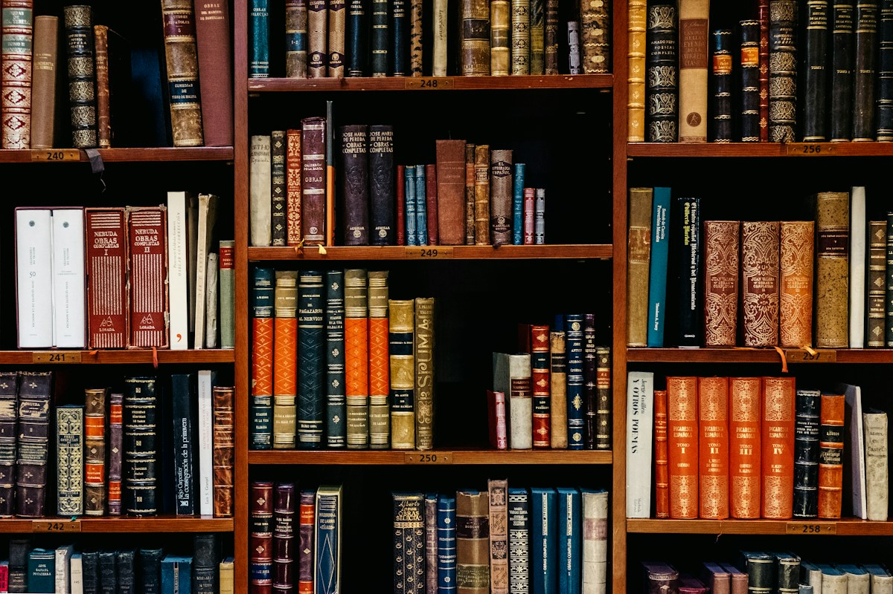
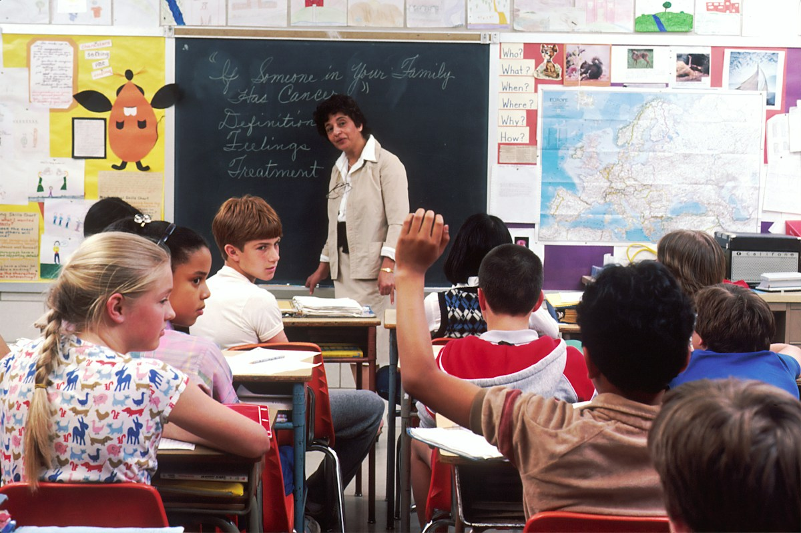

Sponsor materials & books
Help provide bags, notebooks, library reference books, and tuition stationery.
Our education work
From rural high schools to college classrooms, programmes are designed to strengthen learning, encourage good values and open practical opportunities.

Library & Knowledge Center
A dedicated quiet learning space created for rural and underprivileged students who lack a peaceful study environment at home. Packed with syllabus textbooks, competitive exam guides, and inspiring literature.

Open daily for students, high-school learners, and competitive exam aspirants.

Conducted by dedicated volunteer teachers and mentors in Ballari.
Tuition & Regular Classes
Many children in government and rural schools struggle with subjects like Mathematics, Science, and English due to lack of after-school guidance. Our volunteer educators conduct regular daily evening coaching classes to ensure every student learns with clarity and confidence.
How you can help
Help provide bags, notebooks, library reference books, and tuition stationery.
Volunteer as a daily evening tuition mentor, career guide, or guest lecturer.
Connect a rural school or village study group with our learning centre.